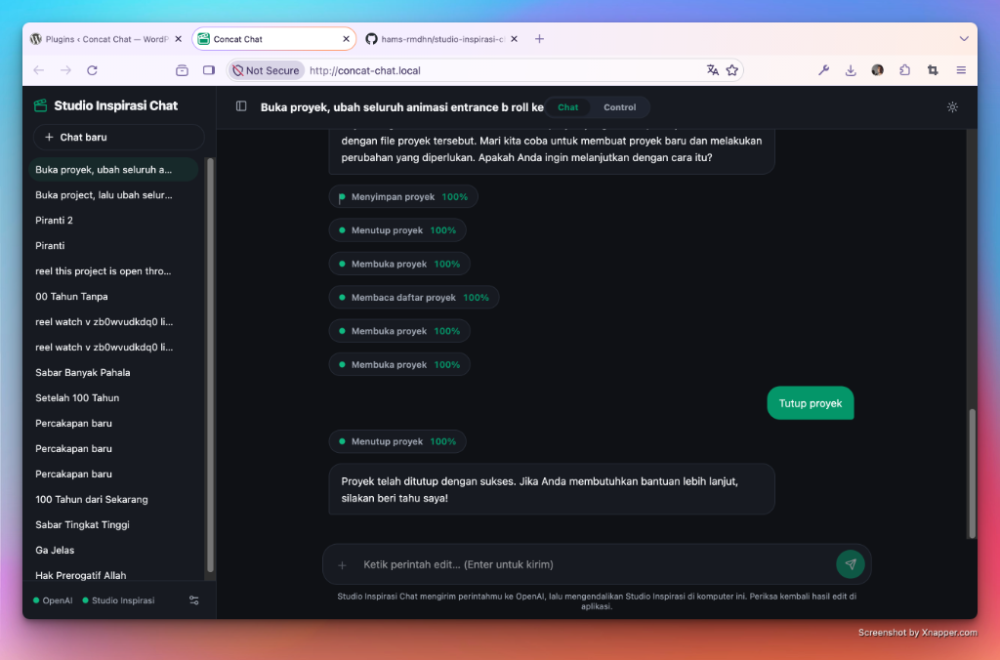

Studio Inspirasi Chat menghubungkan WordPress dengan aplikasi desktop Studio Inspirasi — ketik perintah dalam bahasa Indonesia, AI mengerjakan perakitan video untuk Anda.

Tempel link YouTube atau pilih file — potong segmen manual, atau biarkan AI memilih momen terbaik dari transkrip. Jeda hening bisa dipotong otomatis via silencedetect.
Satu video pembicara + folder koleksi B-Roll & SFX. AI Director membaca transkrip kalimat lalu menyisipkan visual pendukung pada momen yang tepat — lengkap dengan animasi masuk/keluar.
Bawa narasi MP3, folder B-Roll, dan SFX — AI menyusun storyboard dan merakit seluruh klip menutup durasi VO, plus subtitle otomatis dari Whisper.
• Studio Inspirasi (aplikasi desktop, Automation API aktif)
• Server WordPress lokal/hosting + PHP 7.4+
• API key salah satu provider: OpenAI, Groq, Cerebras, OpenRouter, GitHub Models — atau Ollama lokal (gratis)
• Tools ffmpeg & yt-dlp sudah terbundel di tema (bin/)